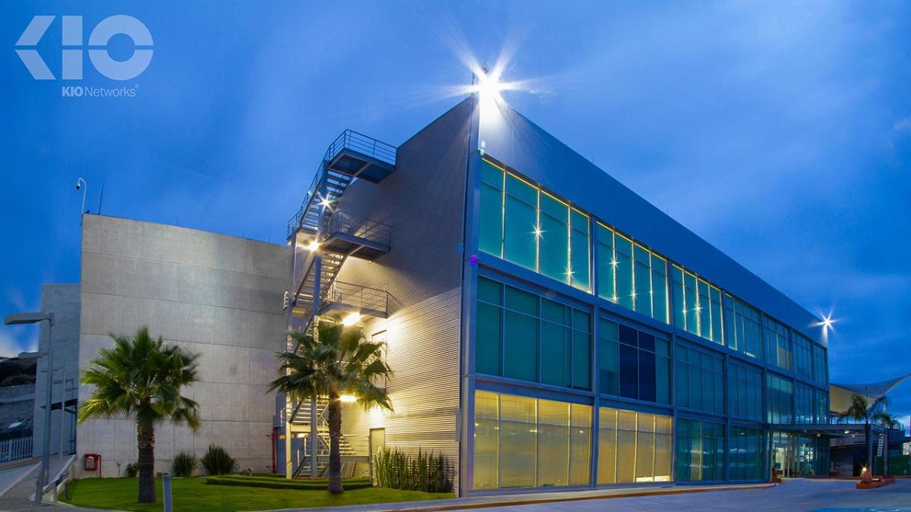

Datos básicos
- Nombre
- KIO Networks — Data Center Querétaro (KIO QRO)
- Ubicación
- Parque Industrial / Querétaro, México — ver mapa abajo
- Tipo
- Privado (operador comercial de colocation y nube)
- Funciones principales
-
- Colocation (rack, cages), colocación de infraestructura crítica.
- Servicios gestionados: hosting, cloud híbrida, DRaaS (recuperación ante desastres).
- Conectividad: peering, enlaces MPLS/Internet de alta capacidad.
- Soporta clientes: banca, telecomunicaciones, empresas de TI, gobierno y educación.
Ubicación
Galería (Centro de Datos)

Fachada del centro de datos KIO Networks en Querétaro.
Infraestructura tecnológica
Servidores y almacenamiento
- Servidores rack y blade — equipos comunes: Dell EMC, HPE, Lenovo.
- Almacenamiento: arrays SAN/NAS, all-flash para cargas críticas y replicación entre sitios.
- Política de backups: backups programados, snapshots y replicación a sitio remoto (DR).
Redes
- Topología con múltiples anillos redundantes.
- Equipos Cisco, Juniper, Arista.
- Conectividad: enlaces a carriers nacionales e internacionales, peering con IXPs.
Virtualización / Cloud
- Hypervisors: VMware, KVM; plataformas de cloud privada: OpenStack.
- Nube híbrida integrable con AWS y Azure.
Infraestructura física
- Capacidad de racks: variable (10–30 kW/rack).
- Climatización: CRAC units, free cooling, control de temperatura y humedad por zonas.
- Energía: UPS redundantes y generadores diésel con autonomía.
- Seguridad física: tarjetas y biometría, torniquetes, CCTV 24/7.
Redundancia y SLA
- Arquitectura eléctrica y de enfriamiento redundante (N+1, 2N, 2N+1).
- SLA comerciales: disponibilidad >99.99%; estrategias de DR y replicación.
Seguridad de la información
- Controles de acceso: MFA, jump servers, DMZ.
- Cifrado: TLS en tránsito, AES-256 en reposo.
- Monitorización: SOC/NOC, SIEM, IDS/IPS, 24/7.
- Backup y continuidad: políticas RTO/RPO, pruebas periódicas de DR.
Normativas y estándares
- TIA-942 (Tier IV en algunos campus).
- ISO/IEC: 27001, 20000, 9001, 50001.
- Buenas prácticas: ITIL, NIST, MoProSoft.
Personal y roles clave
- NOC Operators 24/7.
- Ingenieros de redes, storage, sistemas, virtualización.
- Equipo de Facilities: técnicos eléctricos, HVAC, generadores.
- Seguridad y cumplimiento: oficiales de seguridad, auditoría y continuidad.
Eficiencia energética y sustentabilidad
- Métricas: PUE <1.5 en centros modernos.
- Free cooling, economizadores, iluminación LED, monitoreo DCIM.
- Políticas verdes: energía renovable, reciclaje de e-waste.
Retos y problemas comunes
- Aumento de costos energéticos.
- Obsolescencia del hardware.
- Seguridad física y cibernética.
- Escalabilidad y demanda de conectividad.
Propuesta de mejora (simulada)
- Instalar medidores y sensores IoT por rack para métricas en tiempo real.
- Implementar DCIM que integre consumo, climatización y alertas.
- Usar IA para predecir hotspots, consumo y mantenimiento preventivo.
- Actualizar UPS/convertidores a modelos más eficientes.
Impacto estimado: reducción del consumo 10–20% y menor tasa de incidentes.
Referencias / Fuentes
- Sitio oficial KIO Networks
- Uptime Institute — certificaciones Tier.
- Artículos y notas de prensa sobre KIO (2020–2024).